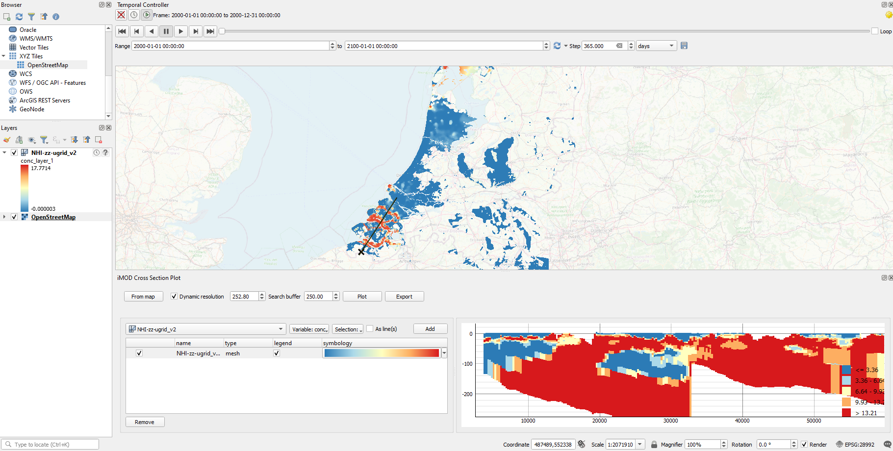
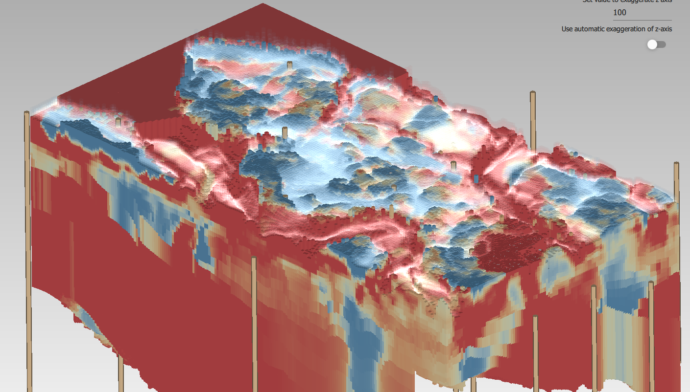

iMOD¶
The iMOD suite provides tools to efficiently build and visualize groundwater models.
Deltares is working to integrate and improve our groundwater software. Therefore iMOD is extended with a new iMOD Suite to link to the latest developments on the MODFLOW and on the changing requirements in the field of groundwatermodelling, most pressing currently the support of unstructured grids.
Therefore we created the new iMOD Suite to aid pre- and post-processing unstructured groundwater models. Furthermore, a second goal of this suite was to better connect to the latest developments in the data science ecosystem, by utilizing:
Existing data format conventions (NetCDF, UGRID) instead of developing new ones, allowing more user flexibility to find the right tools for the right job.
Widely used and tested software (QGIS) to which we add our extension, instead of creating complete programs ourselves.
Modern programming languages (C++ and Python) that allow connecting to a big and lively software ecoystem.
Important technological innovations will be developed in the new iMOD Suite, whereas iMOD5 will be maintained the coming years, because of its proven technology for groundwatermodelling simulations and visualisation, but will see no big new feature developments.
The iMOD Suite offers different modules which support modelling with MODFLOW 6 (including unstructured meshes), visualisation in QGIS, a brand-new 3D viewer, and a python package for a transparent and reproducible modelling workflow.

Easy plotting of 4 dimensional [t, z, y, x] data in the iMOD QGIS plugin. The example shows the chlorine concentrations computed by the NHI fresh-salt model.¶

The proven technology and expertise of iMOD is consolidated in the iMOD5 suite. iMOD5 supports structured calculations with MODFLOW2005 and structured MODFLOW6 and can be coupled to the unsaturated zone model MetaSWAP. The model input and output can be visualised in the fast interactive viewer.

iMOD Suite¶
The suite currently consists of three modules:
iMOD QGIS Plugin: QGIS plugin for visualisation of model input and output with tool for cross-sections, timeseries and link to the 3D viewer. Supports NetCDF, UGRID and ipf’s.
iMOD 3D Viewer: A 3D Viewer for interactive 3D visualisation of unstructured input and output. Supports UGRID file format.
iMOD python: An Python package to support MODFLOW groundwater modeling. It makes it easy to go from your raw data to a fully defined MODFLOW model, with the aim to make this process reproducable. Supports:
USGS MODFLOW 6, structured and unstructerd grids, not all advanced stress packages yet (LAK, MAW, SFR), and only the groundwater flow packages.
iMODFLOW (computational code provided with iMOD5)
iMOD-WQ (computational code provided with iMOD5), which integrates the SEAWAT (density-dependent groundwater flow) and MT3DMS (multi-species reactive transport calculations)
iMOD5¶
The documentation of iMOD5 can be found here: